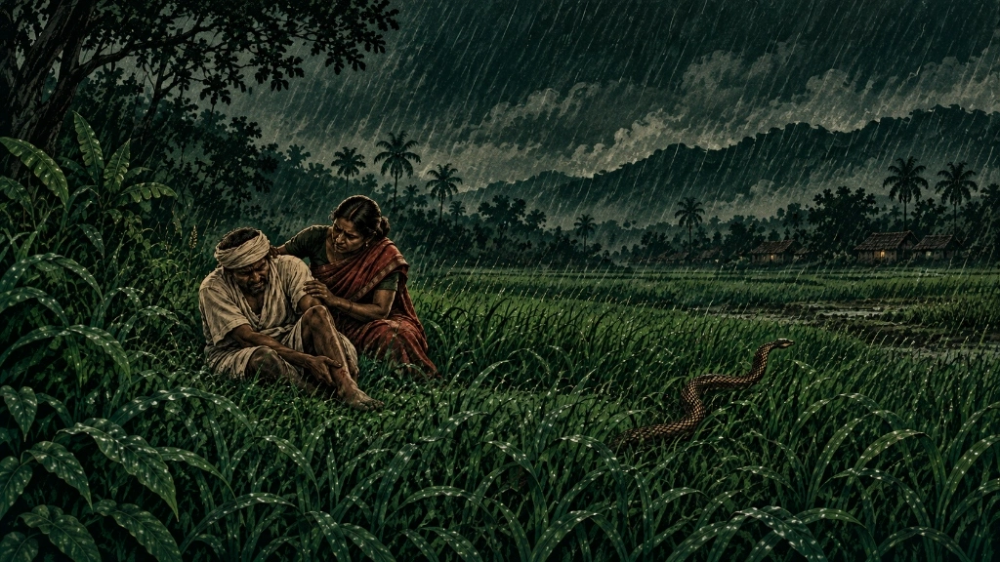
1 in 2snakebite deaths worldwide happen in India
Problem
Fear does more harm than venom.
Myths delay antivenom. Snakes are killed and never counted.
Rushabh Mahore · Interaction Design, NID Bengaluru

A story told through data, and the lives it leaves uncounted.


Problem
Myths delay antivenom. Snakes are killed and never counted.
Process
First the human cost, then the snakes' side.
Tools
iNaturalist data · Leaflet maps · HTML, CSS, JS
 COMMON KRAIT
COMMON KRAIT INDIAN COBRA
INDIAN COBRAOutcome
Big Four card deck, species chart, 5 km sightings map.
Learnings
"Every hour" lands harder than a yearly total.
Discover the object. Travel through its history.
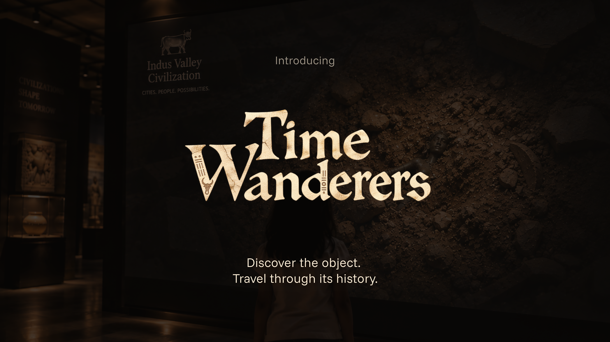
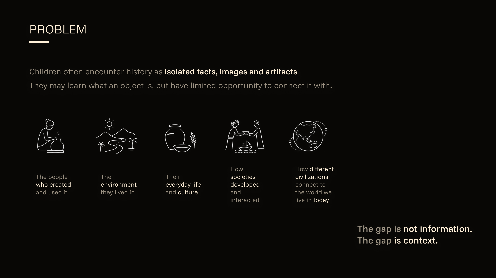
Problem
Children see the artifact, never its world.
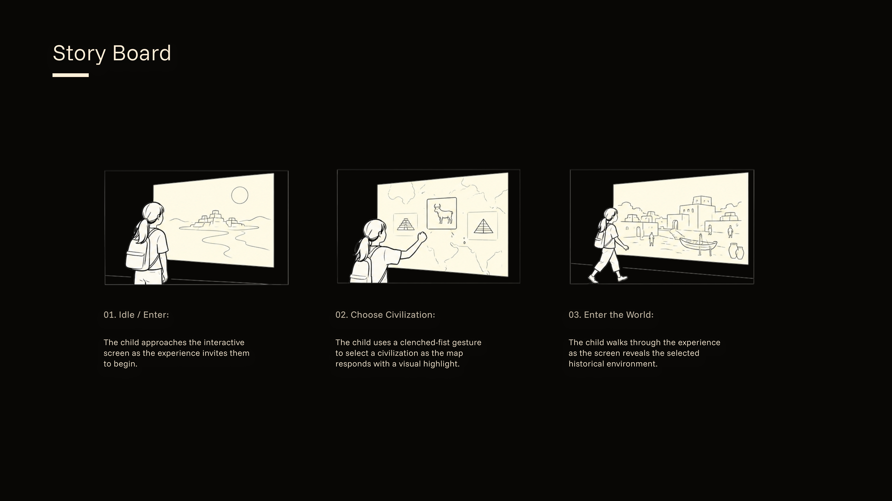
Process
"I found something. What is it?"
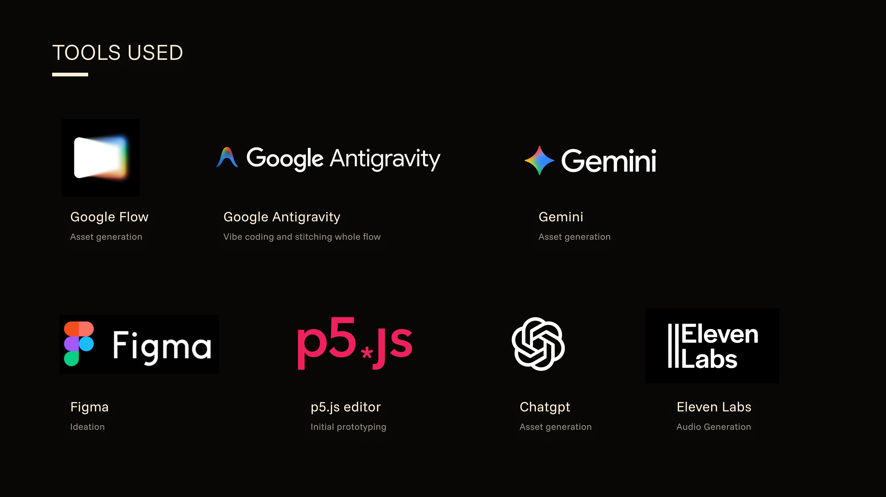
Tools
VS Code · AI assets, video and audio.
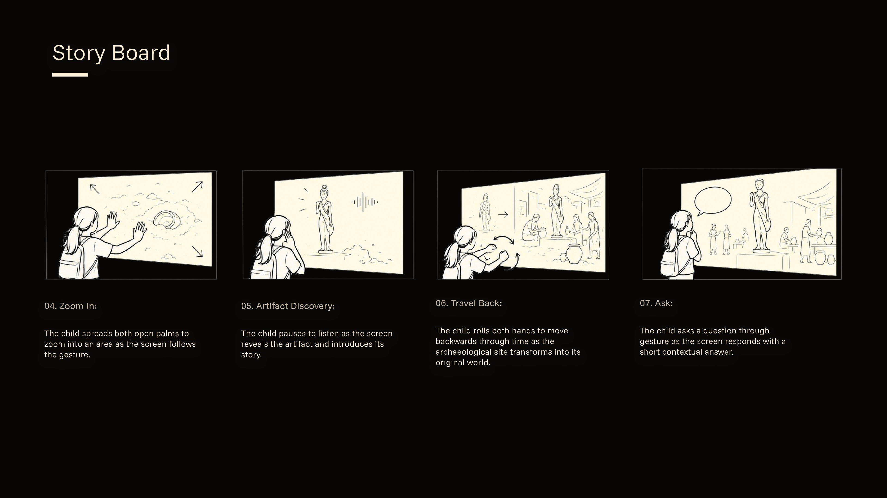
Outcome
A museum you move through with your hands.

Learnings
Testing made us strip gestures back to everyday ones.
Practise the airport, before the airport.
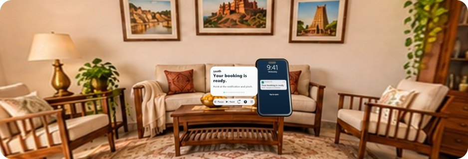
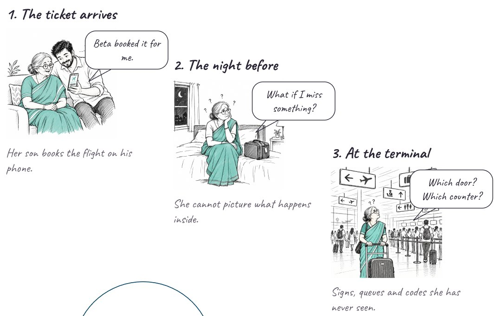
Problem
Airports assume you already know them.
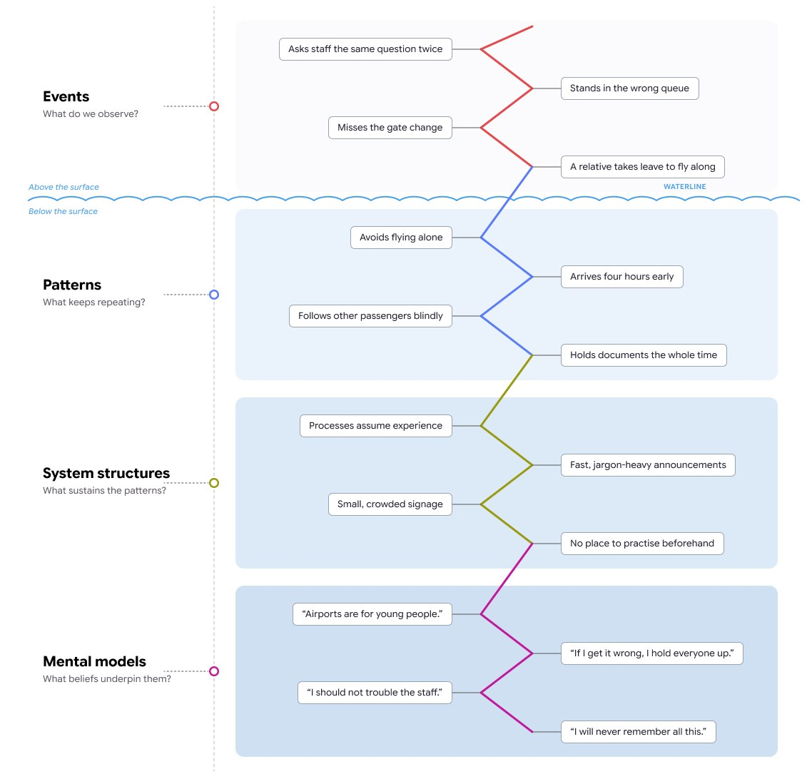
Process
Systems map → interviews → 11-scene journey.
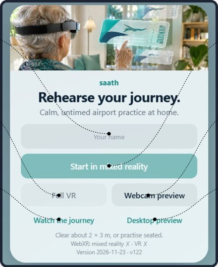
Tools
three.js · WebXR · Blender · Figma · recorded voice
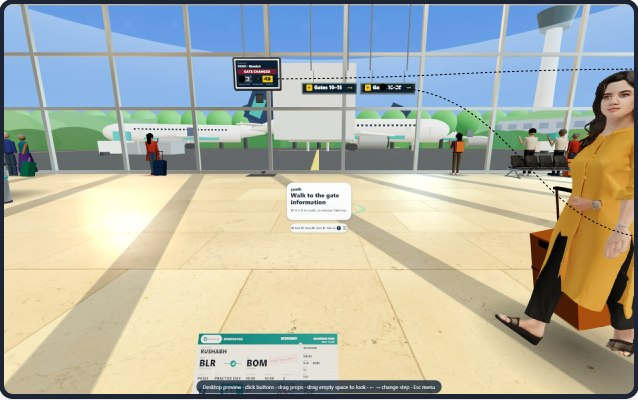
Outcome
Show me · Ask for help · Read aloud, on every step.
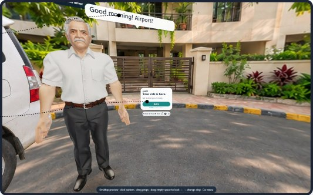
Learnings
No timers, private mistakes, one step at a time.
INDIAN COBRACOMMON KRAITThank you.